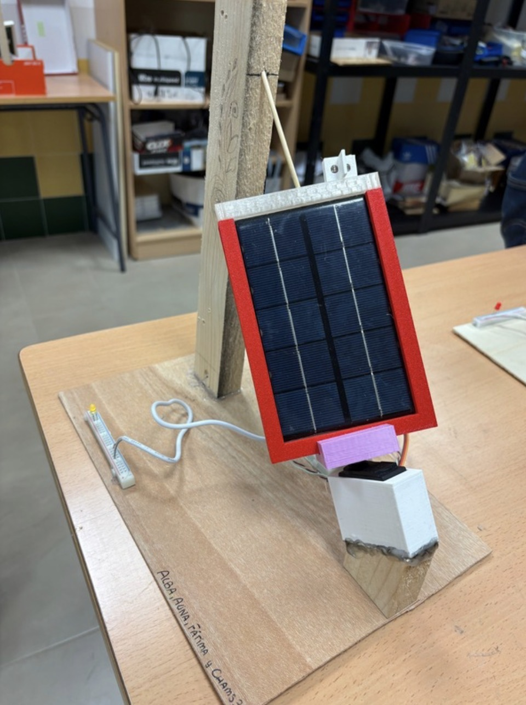
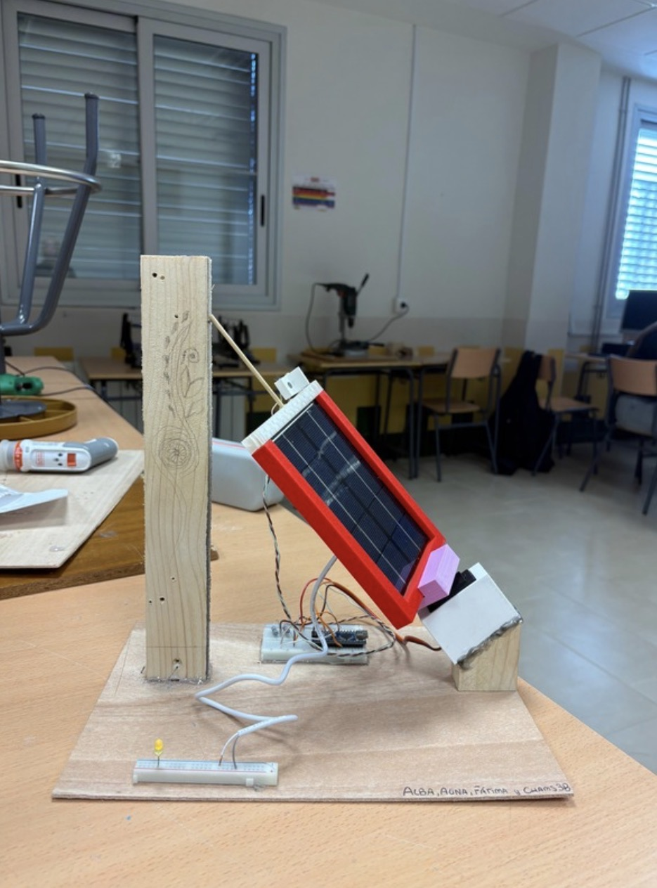

En esta tarea nos dedicamos a la construcción física del seguidor solar, siguiendo los diseños y planos elaborados en las tareas anteriores. Además, documentamos el proceso en una bitácora y hablamos sobre los resultados obtenidos y las posibles mejoras.

